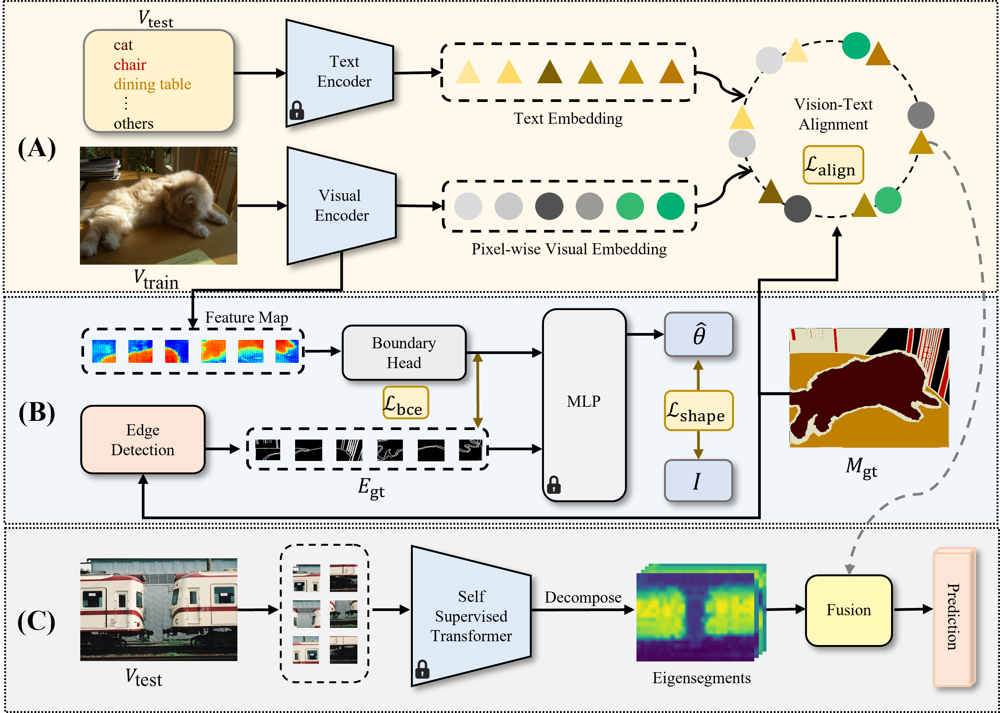

|
HiPrompt: Tuning-free Higher-Resolution Generation with Hierarchical MLLM Prompts
Xinyu Liu, Yingqing He, Lanqing Guo, Xiang Li, Bu Jin, Peng Li, Yan Li, Chi-Min Chan, Qifeng Chen, Wei Xue, Wenhan Luo, Qingfeng Liu, QiYike Guo
[Homepage]
[arXiv]
[Code]

|

|
TOD3Cap: Towards 3D Dense Captioning in Outdoor Scenes
Bu Jin,
Yupeng Zheng,
Pengfei Li,
Weize Li,
Yuhang Zheng,
Sujie Hu,
Xinyu Liu,
Jinwei Zhu,
Zhijie Yan,
Haiyang Sun,
Kun Zhan,
Peng Jia,
Xiaoxiao Long,
Yilun Chen,
Hao Zhao
ECCV, 2024
[Homepage]
[arXiv]
[Code]

|
|

|
Delving into Shape-aware Zero-shot Semantic Segmentation
Xinyu liu,
Beiwen Tian,
Yupeng Zheng,
Zhen Wang,
Rui Wang,
Kehua Sheng,
Bo Zhang,
Hao Zhao,
Guyue Zhou
CVPR, 2023
[arXiv]
[Code]

|

|
Adapt: Action-aware Driving Caption Transformer
Bu Jin,
Xinyu Liu,
Yupeng Zheng,
Pengfei Li,
Hao Zhao†,
Tong Zhang,
Yuhang Zheng,
Guyue Zhou,
Jingjing Liu
ICRA, 2023
[arXiv]
[Code]

|
| |